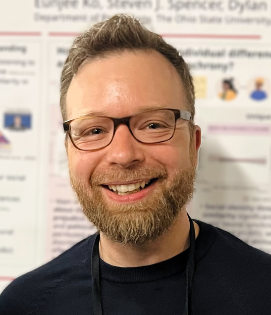
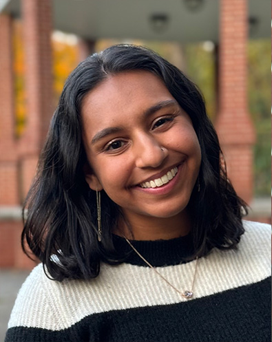
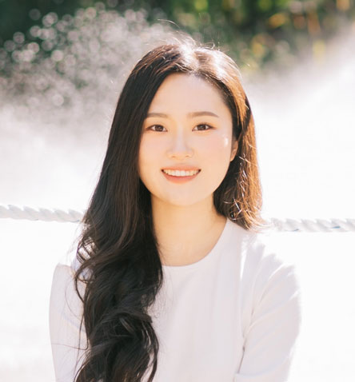
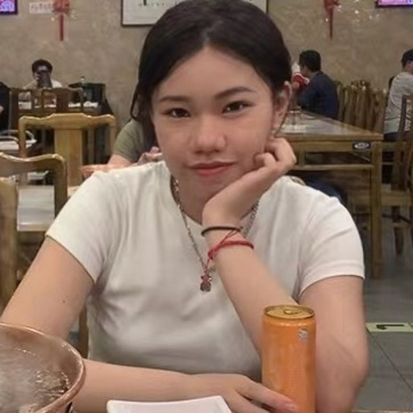
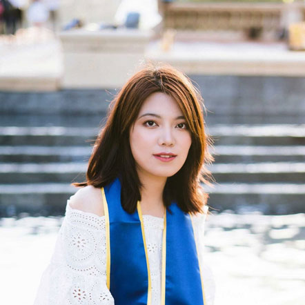
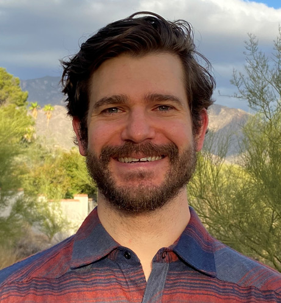
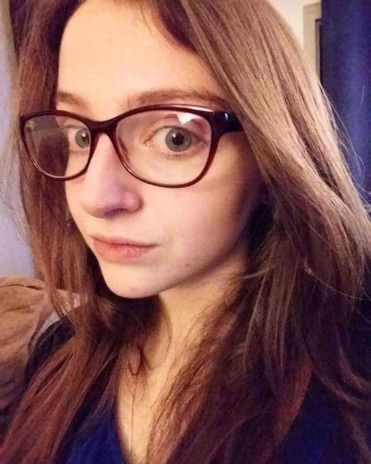

Lab Director
 Dylan D. Wagner, Ph.D. Associate Professor of Psychology Email | Faculty Page | Google Scholar | CV Dylan Wagner is an Associate Professor of Psychology The Ohio State University. He is also a member of the Center for Cognitive and Behavioral Brain Imaging and the Center for Cognitive and Behavioral Science and a core faculty of the newly formed cognitive neuroscience program. His research covers several topics related to person perception, social cognition, self-regulation and social cognitive neuroscience.
Graduate Students
 Rani Bawa | Email Rani is a Ph.D. candidate in social psychology working with Drs. Lisa Libby and Dylan Wagner. She uses a social cognitive approach to study how relational motives (motives for connecting with others) and epistemic motives (motives to find meaning and understanding) affect human behavior and cognition, particularly towards different types of media. For example, in one line of work, she examines parasocial relationships, and in another, she examines personal photography and nostalgia evoked from looking back at photos. She is also interested in identity, discrimination, and tokenism.
 Eunjee Ko | Email Eunjee Ko graduated from Seoul National University in 2020 with B.A. in Psychology and Information Science & Culture, minoring in Brain-Mind-Behavior. She received M.A. in Clinical Psychology from Seoul National University in 2022. Eunjee is broadly interested in how prior experiences related with social inequality influence people’s social cognition and behaviors, and how this relationship is represented in the brain. She also aims to study ways to improve well-being of people and society taking interdisciplinary approach combining methodologies from traditional social psychology, neuroscience, and human-computer interaction.
 Huanqing Wang | Email Personal Website Huanqing graduated from Beijing Normal University with a B.S. in Psychology, minoring in Computer Science in 2019. Before joining the lab, she worked in Dr. Yin Wang’s Multimodal Social Neuroscience Lab. She is interested in investigating social interaction perception and individual differences in perception, from both behavioral level and brain level. She is also interested in using naturalistic stimuli and machine-learning methods to explore the social world.
 Dan Zhu | Email Dan Zhu graduated from the University of California, Los Angeles with a B.A. in Psychology in 2019. Before joining the lab, she worked with Dr. Gui Xue on working memory and cognitive functions at Beijing Normal University, China. Dan is generally interested in the neural mechanism of social decision-making and how social perception can be influenced by self-other similarity. More specifically, she looks at how different aspects of self-other similarity play a role in friendship and social closeness.
Undergraduate Students
- Caroline Watts
- Luke Ritter
- Alicia Burgei
- Jyothika Yermal
- Flora Blandl
- Jonathan Culler
- Katie Donovan
- Ashley Glass
- Luke Hamrock
- Qamar Mohamoud
- Mahrukh Naqvi
- Simon Ren
Lab Alumni
 Robert Chavez, Ph.D.
Associate Professor, University of Oregon |
Lab Website
Robert Chavez graduated from Dartmouth College with a PhD in Cognitive Neuroscience in 2015 and was a post-doc in the lab from 2015-2017. He is now an Associate Professor of Psychology at the University of Oregon. His research investigates how brain regions work together to represent information about the self, other people, and the ways in which people differ from one another.
Robert Chavez, Ph.D.
Associate Professor, University of Oregon |
Lab Website
Robert Chavez graduated from Dartmouth College with a PhD in Cognitive Neuroscience in 2015 and was a post-doc in the lab from 2015-2017. He is now an Associate Professor of Psychology at the University of Oregon. His research investigates how brain regions work together to represent information about the self, other people, and the ways in which people differ from one another.

Timothy W. Broom
Timothy Broom received a B.S. in Psychology and B.A. in Creative Writing from the University of Arizona in 2011, and an M.A. in Psychological Sciences from Northern Arizona University in 2016 and his PhD from The Ohio State University in 2022. He is currently a post-doctoral fellow at Columbia University.
 Eunbin Stephanie Kim
Eunbin Stephanie Kim graduated from Rutgers University-New Brunswick in 2012 with a B.A. in Psychology. She graduated in 2023.
Eunbin Stephanie Kim
Eunbin Stephanie Kim graduated from Rutgers University-New Brunswick in 2012 with a B.A. in Psychology. She graduated in 2023.
 Allison Londerée
Allison Londerée graduated from the Ohio State University with a B.S. in Neuroscience in 2015. She graduated from the lab with a PhD in 2023 and works as a Data Scientist at Lirio.
Allison Londerée
Allison Londerée graduated from the Ohio State University with a B.S. in Neuroscience in 2015. She graduated from the lab with a PhD in 2023 and works as a Data Scientist at Lirio.

Elliot Ping
Elliot Ping was a lab manager from 2020-2022 and is currently studying law at Yale University.